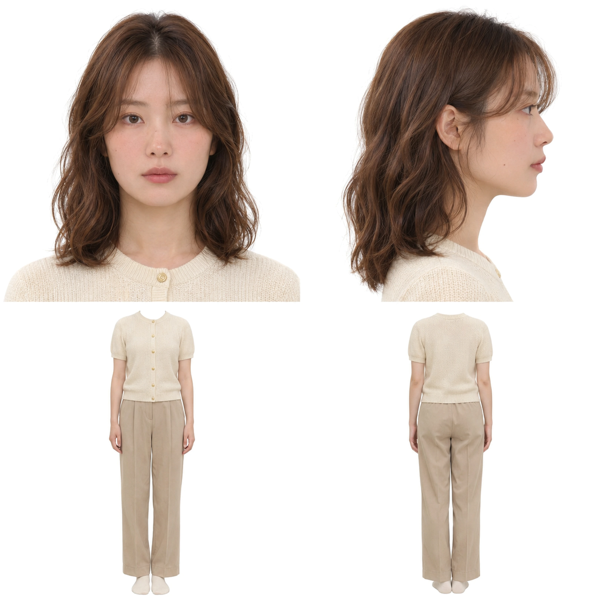
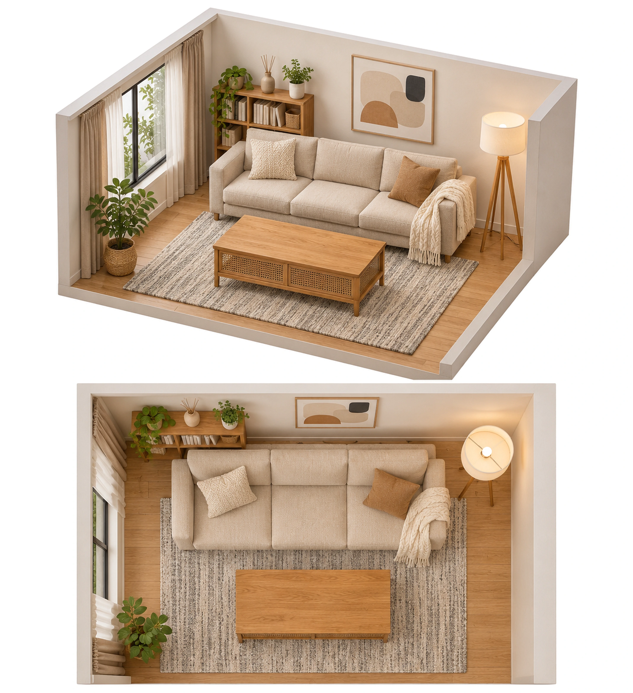
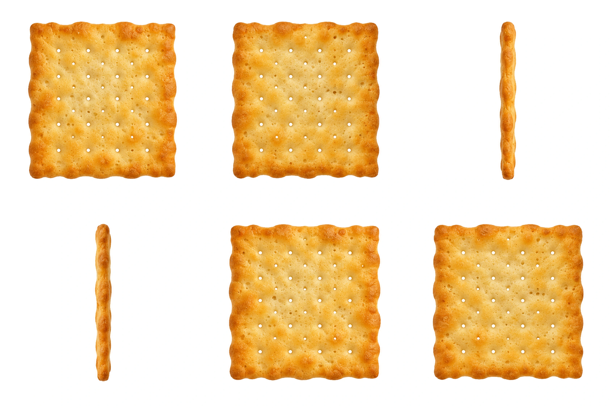
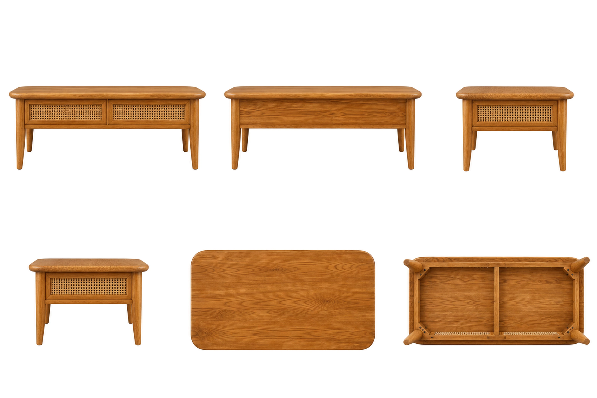
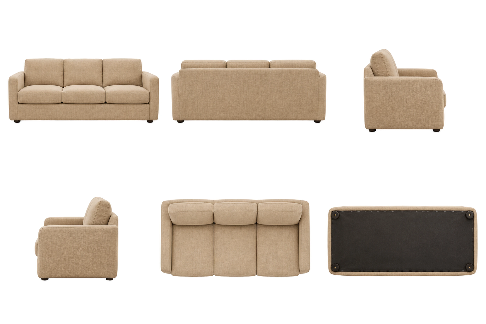
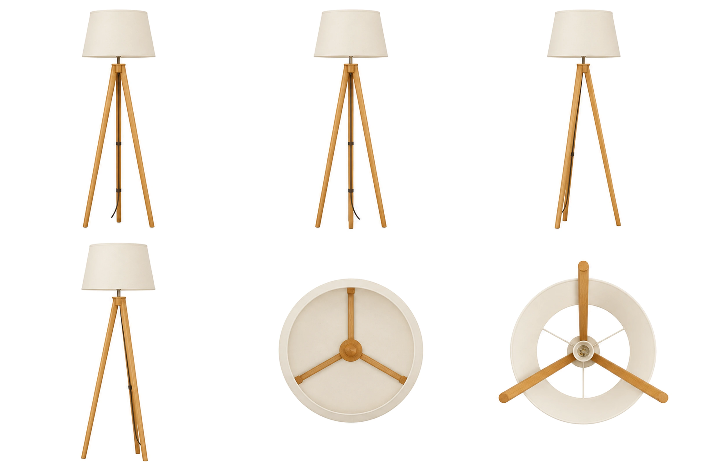

带货种草
苏打饼干
正在连接在线视频…
视频简介
男生在客厅吃饼干被女生发现，他先表现出慌张，再介绍蓝红两袋并掰开饼干。女生试吃后表情转为惊喜，两人共同展示包装并在片尾继续吃。
在快手观看原视频 ↗制作资产
角色资产

米衣女生
到茶几边询问男生在吃什么，试吃后加入介绍。 棕色中长发、米色纽扣针织上衣。咬下后停一下，再抬眼表现惊喜。 成片未完整展示的方位按可见造型补全。
白衣男生
先在桌边吃饼干，随后掰开饼干并展示红蓝两袋。 黑色蓬松短发，灰白长袖上衣；保留鼓腮和看向女生的喜剧节奏。 成片未完整展示的方位按可见造型补全。
场景资产

暖色客厅
暖色客厅的场景视觉设定，用于空间布局、光影与镜头背景。
道具资产
蓝袋苏打饼干
蓝白枕式封袋，保留简单饼干图样，去文字。 男生先拿蓝袋，结束时与红袋并举。 成片未完整展示的方位按可见造型补全。
红袋苏打饼干
红白枕式封袋，边沿有压纹。 桌面左侧与双袋展示使用同款轮廓。 成片未完整展示的方位按可见造型补全。

方形苏打饼干
金黄薄方饼，边缘轻波纹和点状气孔。 用于掰开、试吃及摆成细碎桌屑。 成片未完整展示的方位按可见造型补全。

藤编矮茶几
蜜色窄腿木几，正面藤编片。 作为放包装、吃饼干和最后伸手取食的操作台。 成片未完整展示的方位按可见造型补全。

米色靠背沙发
短扶手、浅米软包、三块靠背坐面。 客厅人物后方固定参照。 成片未完整展示的方位按可见造型补全。

三脚布罩落地灯
木三脚和浅米锥筒罩。 摆在沙发后右，拉开人物与墙面距离。 成片未完整展示的方位按可见造型补全。
剧本与分镜
完整剧本与分镜脚本
带货种草 · 苏打饼干 原片时长 14.60 秒 故事梗概 男生在客厅吃饼干被女生发现，他先表现出慌张，再介绍蓝红两袋并掰开饼干。女生试吃后表情转为惊喜，两人共同展示包装并在片尾继续吃。 人物 米衣女生从发问转为认可，白衣男生从偷吃转为分享。两人都在客厅操作同一桌面。 场景 暖色客厅以藤编茶几、米色沙发、三脚灯形成唯一场地。 道具用途 两款袋装商品用于品牌段；方形饼干用于掰开、咬下及桌面碎屑。 剧本与分镜 按原片抽帧重建的复拍制作稿。画面未能确认的对白、音效与镜头节奏按下表执行。 | 镜号 | 画面内容 | 镜头视角 | 使用资产 | 动作描述 | 台词/旁白 | 音效 | 单镜头时长 | | 01 | 女生靠到茶几边问男生 | 侧面双人中景 | 米衣女生、白衣男生、暖色客厅、两色饼干袋 | 女生向下看，男生停在咀嚼动作 | 女生：你在吃什么？ | 轻嚼、衣声 | 1.60秒 | | 02 | 男生鼓腮，护住蓝袋 | 正面人物近景 | 白衣男生、蓝袋苏打饼干 | 瞪眼看女生，再放低手中包装 | — | 促节拍 | 2.00秒 | | 03 | 男生并举红蓝两袋 | 过肩中景接包装特写 | 白衣男生、红袋苏打饼干、蓝袋苏打饼干 | 双手同时举到胸前 | 男生：尝尝这个。 | 包装脆响 | 1.90秒 | | 04 | 两手掰开方饼 | 饼干近景，人物虚焦作背景 | 方形苏打饼干、米衣女生 | 向两侧掰开，露出断口和碎屑 | — | 咔嚓 | 2.30秒 | | 05 | 女生咬下后睁圆眼睛 | 正面面部近景 | 米衣女生、方形苏打饼干 | 入口后抬眼，停半拍 | — | 清脆咀嚼 | 1.50秒 | | 06 | 二人坐正面共同展示产品 | 茶几对面中景 | 两位主角、两色饼干袋、藤编矮茶几 | 包装居中，女生示意镜头前方 | 女生：这个可以试试。 | 轻快节拍 | 2.70秒 | | 07 | 两人低头继续伸手取食 | 茶几上方近景 | 两位主角、方形苏打饼干、两色饼干袋 | 两只手从不同边缘拿起饼干，咀嚼收尾 | — | 包装声和咬嚼 | 2.60秒 | 时长合计 14.60 秒